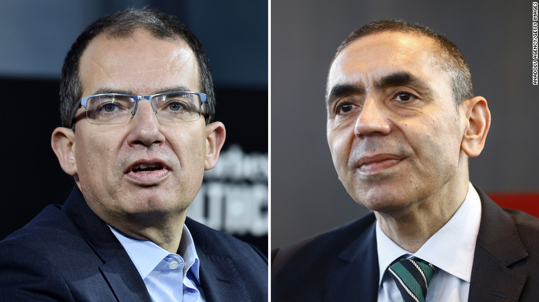

COVID: 9 Pharma CEOs new Billionaires
June 24th, 2021
I was searching for some info on how much billionaires have increased their net worths during COVID19. The moderate estimates are at well over 1 billion, with one particular study showing that billionaires in the US alone have increased their net worths by 4 trillion collectively. I felt this was a great point to bring up to show just how utterly fake the Corporate State Complex's response to COVID19 really was and is, when I stumbled upon this little gem.
CNN:
TDC_ARTICLE_START
Covid-19 vaccines have created at least nine new billionaires after shares in companies producing the shots soared.
...
Moderna's share price has gained more than 700% since February 2020, while BioNTech has surged 600%. CanSino Biologics' stock is up about 440% over the same period. The company's single-dose Covid-19 vaccine was approved for use in China in February.
...
"These billionaires are the human face of the huge profits many pharmaceutical corporations are making from the monopoly they hold on these vaccines," Anne Marriott, Oxfam's health policy manager, said in a statement. "These vaccines were funded by public money and should be first and foremost a global public good, not a private profit opportunity," she added.
TDC_ARTICLE_STOP
As beautiful on the inside as they are on the out.
In case you were wondering what the CNN angle is, why they're pushing this, well the article goes on to talk about how sad it is that poor countries don't get enough vaccines. The strategy here being to get out in front of people's backlash against billionaires and big pharma by attempting to make it about "muh poor brown people," instead of literally everyone who isn't a pharma CEO.
I don't feel like printing it out, but the entire rest of the article, about 90%, just goes on and on and on about how great these big pharma companies are because they're giving lots of vaccines to poor countries, not poor people in this country, goy, but poor countries. Vaccines that your taxes helped develop of course.
It's all so tiresome.